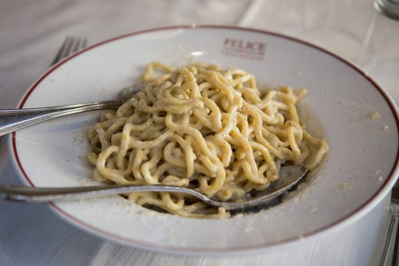

Carbonara al Funghi

Ingredients
4 Rashers streaky bacon
10g chopped dried porcini mushrooms
4 25g closed cup mushrooms
90g of value spaghetti thinly sliced
1 beaten egg
30g of grated Parmesan cheese
2 teaspoons Olive oil
1/2 finely chopped small Garlic clove
Methods
1) Soak the porcini mushrooms in hot water for 20 minutes.
2) Drain, chop and set aside.
3) Mix the beaten egg and two thirds of the Parmesan cheese in a large bowl to make the Carbonara sauce.
4) Season with salt and pepper.
5) Cook the spaghetti according to the packet instructions.
6) Meanwhile, heat the oil in a frying pan and fry the bacon for 3 minutes.
7) Add the fresh mushrooms, porcini mushrooms and garlic and cook for a further 3-‐4 minutes, stirring frequently.
8) Drain the spaghetti, reserving 1tbsp of the cooking water.
9) Immediately add the pasta to the Carbonara sauce as well as the reserved cooking water, bacon and mushrooms.
10) Toss it all together with two forks. (The egg will be cooked by the heat of the pasta, and the sauce will cling to the strands.)
11) Serve immediately topped with the remaining Parmesan cheese.
Recipes like this one that involve raw or lightly cooked eggs should always use eggs that are as fresh as possible and have been stored according to the packaging guidelines.
BACK TO HOME